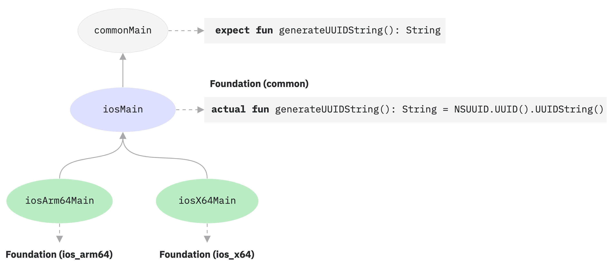

Kotlin 1.6.20 的新特性
Kotlin 1.6.20 reveals previews of the future language features, makes the hierarchical structure the default for multiplatform projects, and brings evolutionary improvements to other components.
You can also find a short overview of the changes in this video:
YouTube 视频：What's new in Kotlin 1.6.20
语言
In Kotlin 1.6.20, you can try two new language features:
Kotlin/JVM 的上下文接收者原型
The feature is a prototype available only for Kotlin/JVM. With
-Xcontext-receiversenabled, the compiler will produce pre-release binaries that cannot be used in production code. Use context receivers only in your toy projects. We appreciate your feedback in YouTrack.
With Kotlin 1.6.20, you are no longer limited to having one receiver. If you need more, you can make functions, properties, and classes context-dependent (or contextual) by adding context receivers to their declaration. A contextual declaration does the following:
- It requires all declared context receivers to be present in a caller's scope as implicit receivers.
- It brings declared context receivers into its body scope as implicit receivers.
interface LoggingContext {
val log: Logger // This context provides a reference to a logger
}
context(LoggingContext)
fun startBusinessOperation() {
// You can access the log property since LoggingContext is an implicit receiver
log.info("Operation has started")
}
fun test(loggingContext: LoggingContext) {
with(loggingContext) {
// You need to have LoggingContext in a scope as an implicit receiver
// to call startBusinessOperation()
startBusinessOperation()
}
}
To enable context receivers in your project, use the -Xcontext-receivers compiler option.
You can find a detailed description of the feature and its syntax in the KEEP.
Please note that the implementation is a prototype:
- With
-Xcontext-receiversenabled, the compiler will produce pre-release binaries that cannot be used in production code - The IDE support for context receivers is minimal for now
Try the feature in your toy projects and share your thoughts and experience with us in this YouTrack issue. If you run into any problems, please file a new issue.
绝对不可空类型
Definitely non-nullable types are in Beta. They are almost stable, but migration steps may be required in the future. We'll do our best to minimize any changes you have to make.
To provide better interoperability when extending generic Java classes and interfaces, Kotlin 1.6.20 allows you to mark a generic type parameter as definitely non-nullable on the use site with the new syntax T & Any.
The syntactic form comes from a notation of intersection types and is now limited to a type parameter with nullable upper bounds on the left side of & and non-nullable Any on the right side:
fun <T> elvisLike(x: T, y: T & Any): T & Any = x ?: y
fun main() {
// OK
elvisLike<String>("", "").length
// Error: 'null' cannot be a value of a non-null type
elvisLike<String>("", null).length
// OK
elvisLike<String?>(null, "").length
// Error: 'null' cannot be a value of a non-null type
elvisLike<String?>(null, null).length
}
Set the language version to 1.7 to enable the feature:
【Kotlin】
kotlin {
sourceSets.all {
languageSettings.apply {
languageVersion = "1.7"
}
}
}
【Groovy】
kotlin {
sourceSets.all {
languageSettings {
languageVersion = '1.7'
}
}
}
Learn more about definitely non-nullable types in the KEEP.
Kotlin/JVM
Kotlin 1.6.20 introduces:
- Compatibility improvements of default methods in JVM interfaces: 接口的新
@JvmDefaultWithCompatibility注解 and-Xjvm-default模式的兼容性变更 - 支持 JVM 后端中单个模块的并行编译
- 支持函数式接口构造函数的可调用引用
接口的新 @JvmDefaultWithCompatibility 注解
Kotlin 1.6.20 introduces the new annotation @JvmDefaultWithCompatibility: use it along with the -Xjvm-default=all compiler option to create the default method in JVM interface for any non-abstract member in any Kotlin interface.
If there are clients that use your Kotlin interfaces compiled without the -Xjvm-default=all option, they may be binary-incompatible with the code compiled with this option.
Before Kotlin 1.6.20, to avoid this compatibility issue, the recommended approach was to use the -Xjvm-default=all-compatibility mode and also the @JvmDefaultWithoutCompatibility annotation for interfaces that didn't need this type of compatibility.
This approach had some disadvantages:
- You could easily forget to add the annotation when a new interface was added.
- Usually there are more interfaces in non-public parts than in the public API, so you end up having this annotation in many places in your code.
Now, you can use the -Xjvm-default=all mode and mark interfaces with the @JvmDefaultWithCompatibility annotation.
This allows you to add this annotation to all interfaces in the public API once, and you won't need to use any annotations for new non-public code.
Leave your feedback about this new annotation in this YouTrack ticket.
-Xjvm-default 模式的兼容性变更
Kotlin 1.6.20 adds the option to compile modules in the default mode (the -Xjvm-default=disable compiler option) against modules compiled with the -Xjvm-default=all or -Xjvm-default=all-compatibility modes.
As before, compilations will also be successful if all modules have the -Xjvm-default=all or -Xjvm-default=all-compatibility modes.
You can leave your feedback in this YouTrack issue.
Kotlin 1.6.20 deprecates the compatibility and enable modes of the compiler option -Xjvm-default.
There are changes in other modes' descriptions regarding the compatibility, but the overall logic remains the same.
You can check out the updated descriptions.
For more information about default methods in the Java interop, see the interoperability documentation and this blog post.
支持 JVM 后端中单个模块的并行编译
Support for parallel compilation of a single module in the JVM backend is Experimental. It may be dropped or changed at any time. Opt-in is required (see details below), and you should use it only for evaluation purposes. We would appreciate your feedback on it in YouTrack.
We are continuing our work to improve the new JVM IR backend compilation time. In Kotlin 1.6.20, we added the experimental JVM IR backend mode to compile all the files in a module in parallel. Parallel compilation can reduce the total compilation time by up to 15%.
Enable the experimental parallel backend mode with the compiler option -Xbackend-threads.
Use the following arguments for this option:
Nis the number of threads you want to use. It should not be greater than your number of CPU cores; otherwise, parallelization stops being effective because of switching context between threads0to use a separate thread for each CPU core
Gradle can run tasks in parallel, but this type of parallelization doesn't help a lot when a project (or a major part of a project) is just one big task from Gradle's perspective. If you have a very big monolithic module, use parallel compilation to compile more quickly. If your project consists of lots of small modules and has a build parallelized by Gradle, adding another layer of parallelization may hurt performance because of context switching.
Parallel compilation has some constraints:
- It doesn't work with kapt because kapt disables the IR backend
- It requires more JVM heap by design. The amount of heap is proportional to the number of threads
支持函数式接口构造函数的可调用引用
Support for callable references to functional interface constructors is Experimental. It may be dropped or changed at any time. Opt-in is required (see details below), and you should use it only for evaluation purposes. We would appreciate your feedback on it in YouTrack.
Support for callable references to functional interface constructors adds a source-compatible way to migrate from an interface with a constructor function to a functional interface.
Consider the following code:
interface Printer {
fun print()
}
fun Printer(block: () -> Unit): Printer = object : Printer { override fun print() = block() }
With callable references to functional interface constructors enabled, this code can be replaced with just a functional interface declaration:
fun interface Printer {
fun print()
}
Its constructor will be created implicitly, and any code using the ::Printer function reference will compile. For example:
documentsStorage.addPrinter(::Printer)
Preserve the binary compatibility by marking the legacy function Printer with the @Deprecated annotation with DeprecationLevel.HIDDEN:
@Deprecated(message = "Your message about the deprecation", level = DeprecationLevel.HIDDEN)
fun Printer(...) {...}
Use the compiler option -XXLanguage:+KotlinFunInterfaceConstructorReference to enable this feature.
Kotlin/Native
Kotlin/Native 1.6.20 marks continued development of its new components. We've taken another step toward consistent experience with Kotlin on other platforms:
- 新版内存管理器的更新
- 新版内存管理器中清除阶段的并发实现
- 注解类的实例化
- 与 Swift async/await 互操作：返回 Void 而不是 KotlinUnit
- 使用 libbacktrace 实现更佳的堆栈跟踪
- 支持独立的 Android 可执行文件
- 性能提升
- 改进了 cinterop 模块导入过程中的错误处理
- 对 Xcode 13 库的支持
新版内存管理器的更新
The new Kotlin/Native memory manager is in Alpha. It may change incompatibly and require manual migration in the future. We would appreciate your feedback on it in YouTrack.
With Kotlin 1.6.20, you can try the Alpha version of the new Kotlin/Native memory manager. It eliminates the differences between the JVM and Native platforms to provide a consistent developer experience in multiplatform projects. For example, you'll have a much easier time creating new cross-platform mobile applications that work on both Android and iOS.
The new Kotlin/Native memory manager lifts restrictions on object-sharing between threads. It also provides leak-free concurrent programming primitives that are safe and don't require any special management or annotations.
The new memory manager will become the default in future versions, so we encourage you to try it now. Check out our blog post to learn more about the new memory manager and explore demo projects, or jump right to the migration instructions to try it yourself.
Try using the new memory manager on your projects to see how it works and share feedback in our issue tracker, YouTrack.
新版内存管理器中清除阶段的并发实现
If you have already switched to our new memory manager, which was announced in Kotlin 1.6, you might notice a huge execution time improvement: our benchmarks show 35% improvement on average. Starting with 1.6.20, there is also a concurrent implementation for the sweep phase available for the new memory manager. This should also improve the performance and decrease the duration of garbage collector pauses.
To enable the feature for the new Kotlin/Native memory manager, pass the following compiler option:
-Xgc=cms
Feel free to share your feedback on the new memory manager performance in this YouTrack issue.
注解类的实例化
In Kotlin 1.6.0, instantiation of annotation classes became Stable for Kotlin/JVM and Kotlin/JS. The 1.6.20 version delivers support for Kotlin/Native.
Learn more about 注解类的实例化.
与 Swift async/await 互操作：返回 Void 而不是 KotlinUnit
Concurrency interoperability with Swift async/await is Experimental. It may be dropped or changed at any time. You should use it only for evaluation purposes. We would appreciate your feedback on it in YouTrack.
We've continued working on the experimental interop with Swift's async/await (available since Swift 5.5).
Kotlin 1.6.20 differs from previous versions in the way it works with suspend functions with the Unit return type.
Previously, such functions were presented in Swift as async functions returning KotlinUnit. However, the proper return type for them is Void, similar to non-suspending functions.
To avoid breaking the existing code, we're introducing a Gradle property that makes the compiler translate Unit-returning suspend functions to async Swift with the Void return type:
# gradle.properties
kotlin.native.binary.unitSuspendFunctionObjCExport=proper
We plan to make this behavior the default in future Kotlin releases.
使用 libbacktrace 实现更佳的堆栈跟踪
Using libbacktrace for resolving source locations is Experimental. It may be dropped or changed at any time. You should use it only for evaluation purposes. We would appreciate your feedback on it in YouTrack.
Kotlin/Native is now able to produce detailed stack traces with file locations and line numbers
for better debugging of linux* (except linuxMips32 and linuxMipsel32) and androidNative* targets.
This feature uses the libbacktrace library under the hood. Take a look at the following code to see an example of the difference:
fun main() = bar()
fun bar() = baz()
inline fun baz() {
error("")
}
- Before 1.6.20:
Uncaught Kotlin exception: kotlin.IllegalStateException:
at 0 example.kexe 0x227190 kfun:kotlin.Throwable#<init>(kotlin.String?){} + 96
at 1 example.kexe 0x221e4c kfun:kotlin.Exception#<init>(kotlin.String?){} + 92
at 2 example.kexe 0x221f4c kfun:kotlin.RuntimeException#<init>(kotlin.String?){} + 92
at 3 example.kexe 0x22234c kfun:kotlin.IllegalStateException#<init>(kotlin.String?){} + 92
at 4 example.kexe 0x25d708 kfun:#bar(){} + 104
at 5 example.kexe 0x25d68c kfun:#main(){} + 12
- 1.6.20 with libbacktrace:
Uncaught Kotlin exception: kotlin.IllegalStateException:
at 0 example.kexe 0x229550 kfun:kotlin.Throwable#<init>(kotlin.String?){} + 96 (/opt/buildAgent/work/c3a91df21e46e2c8/kotlin/kotlin-native/runtime/src/main/kotlin/kotlin/Throwable.kt:24:37)
at 1 example.kexe 0x22420c kfun:kotlin.Exception#<init>(kotlin.String?){} + 92 (/opt/buildAgent/work/c3a91df21e46e2c8/kotlin/kotlin-native/runtime/src/main/kotlin/kotlin/Exceptions.kt:23:44)
at 2 example.kexe 0x22430c kfun:kotlin.RuntimeException#<init>(kotlin.String?){} + 92 (/opt/buildAgent/work/c3a91df21e46e2c8/kotlin/kotlin-native/runtime/src/main/kotlin/kotlin/Exceptions.kt:34:44)
at 3 example.kexe 0x22470c kfun:kotlin.IllegalStateException#<init>(kotlin.String?){} + 92 (/opt/buildAgent/work/c3a91df21e46e2c8/kotlin/kotlin-native/runtime/src/main/kotlin/kotlin/Exceptions.kt:70:44)
at 4 example.kexe 0x25fac8 kfun:#bar(){} + 104 [inlined] (/opt/buildAgent/work/c3a91df21e46e2c8/kotlin/libraries/stdlib/src/kotlin/util/Preconditions.kt:143:56)
at 5 example.kexe 0x25fac8 kfun:#bar(){} + 104 [inlined] (/private/tmp/backtrace/src/commonMain/kotlin/app.kt:4:5)
at 6 example.kexe 0x25fac8 kfun:#bar(){} + 104 (/private/tmp/backtrace/src/commonMain/kotlin/app.kt:2:13)
at 7 example.kexe 0x25fa4c kfun:#main(){} + 12 (/private/tmp/backtrace/src/commonMain/kotlin/app.kt:1:14)
On Apple targets, which already had file locations and line numbers in stack traces, libbacktrace provides more details for inline function calls:
- Before 1.6.20:
Uncaught Kotlin exception: kotlin.IllegalStateException:
at 0 example.kexe 0x10a85a8f8 kfun:kotlin.Throwable#<init>(kotlin.String?){} + 88 (/opt/buildAgent/work/c3a91df21e46e2c8/kotlin/kotlin-native/runtime/src/main/kotlin/kotlin/Throwable.kt:24:37)
at 1 example.kexe 0x10a855846 kfun:kotlin.Exception#<init>(kotlin.String?){} + 86 (/opt/buildAgent/work/c3a91df21e46e2c8/kotlin/kotlin-native/runtime/src/main/kotlin/kotlin/Exceptions.kt:23:44)
at 2 example.kexe 0x10a855936 kfun:kotlin.RuntimeException#<init>(kotlin.String?){} + 86 (/opt/buildAgent/work/c3a91df21e46e2c8/kotlin/kotlin-native/runtime/src/main/kotlin/kotlin/Exceptions.kt:34:44)
at 3 example.kexe 0x10a855c86 kfun:kotlin.IllegalStateException#<init>(kotlin.String?){} + 86 (/opt/buildAgent/work/c3a91df21e46e2c8/kotlin/kotlin-native/runtime/src/main/kotlin/kotlin/Exceptions.kt:70:44)
at 4 example.kexe 0x10a8489a5 kfun:#bar(){} + 117 (/private/tmp/backtrace/src/commonMain/kotlin/app.kt:2:1)
at 5 example.kexe 0x10a84891c kfun:#main(){} + 12 (/private/tmp/backtrace/src/commonMain/kotlin/app.kt:1:14)
...
- 1.6.20 with libbacktrace:
Uncaught Kotlin exception: kotlin.IllegalStateException:
at 0 example.kexe 0x10669bc88 kfun:kotlin.Throwable#<init>(kotlin.String?){} + 88 (/opt/buildAgent/work/c3a91df21e46e2c8/kotlin/kotlin-native/runtime/src/main/kotlin/kotlin/Throwable.kt:24:37)
at 1 example.kexe 0x106696bd6 kfun:kotlin.Exception#<init>(kotlin.String?){} + 86 (/opt/buildAgent/work/c3a91df21e46e2c8/kotlin/kotlin-native/runtime/src/main/kotlin/kotlin/Exceptions.kt:23:44)
at 2 example.kexe 0x106696cc6 kfun:kotlin.RuntimeException#<init>(kotlin.String?){} + 86 (/opt/buildAgent/work/c3a91df21e46e2c8/kotlin/kotlin-native/runtime/src/main/kotlin/kotlin/Exceptions.kt:34:44)
at 3 example.kexe 0x106697016 kfun:kotlin.IllegalStateException#<init>(kotlin.String?){} + 86 (/opt/buildAgent/work/c3a91df21e46e2c8/kotlin/kotlin-native/runtime/src/main/kotlin/kotlin/Exceptions.kt:70:44)
at 4 example.kexe 0x106689d35 kfun:#bar(){} + 117 [inlined] (/opt/buildAgent/work/c3a91df21e46e2c8/kotlin/libraries/stdlib/src/kotlin/util/Preconditions.kt:143:56)
>> at 5 example.kexe 0x106689d35 kfun:#bar(){} + 117 [inlined] (/private/tmp/backtrace/src/commonMain/kotlin/app.kt:4:5)
at 6 example.kexe 0x106689d35 kfun:#bar(){} + 117 (/private/tmp/backtrace/src/commonMain/kotlin/app.kt:2:13)
at 7 example.kexe 0x106689cac kfun:#main(){} + 12 (/private/tmp/backtrace/src/commonMain/kotlin/app.kt:1:14)
...
To produce better stack traces with libbacktrace, add the following line to gradle.properties:
# gradle.properties
kotlin.native.binary.sourceInfoType=libbacktrace
Please tell us how debugging Kotlin/Native with libbacktrace works for you in this YouTrack issue.
支持独立的 Android 可执行文件
Previously, Android Native executables in Kotlin/Native were not actually executables but shared libraries that you could use as a NativeActivity. Now there's an option to generate standard executables for Android Native targets.
For that, in the build.gradle(.kts) part of your project, configure the executable block of your androidNative target.
Add the following binary option:
kotlin {
androidNativeX64("android") {
binaries {
executable {
binaryOptions["androidProgramType"] = "standalone"
}
}
}
}
Note that this feature will become the default in Kotlin 1.7.0. If you want to preserve the current behavior, use the following setting:
binaryOptions["androidProgramType"] = "nativeActivity"
Thanks to Mattia Iavarone for the implementation!
性能提升
We are working hard on Kotlin/Native to speed up the compilation process and improve your developing experience.
Kotlin 1.6.20 brings some performance updates and bug fixes that affect the LLVM IR that Kotlin generates. According to the benchmarks on our internal projects, we achieved the following performance boosts on average:
- 15% reduction in execution time
- 20% reduction in the code size of both release and debug binaries
- 26% reduction in the compilation time of release binaries
These changes also provide a 10% reduction in compilation time for a debug binary on a large internal project.
To achieve this, we've implemented static initialization for some of the compiler-generated synthetic objects, improved the way we structure LLVM IR for every function, and optimized the compiler caches.
改进了 cinterop 模块导入过程中的错误处理
This release introduces improved error handling for cases where you import an Objective-C module using the cinterop tool (as is typical for CocoaPods pods).
Previously, if you got an error while trying to work with an Objective-C module (for instance, when dealing with a compilation error in a header), you received an uninformative error message, such as fatal error: could not build module $name.
We expanded upon this part of the cinterop tool, so you'll get an error message with an extended description.
对 Xcode 13 库的支持
Libraries delivered with Xcode 13 have full support as of this release. Feel free to access them from anywhere in your Kotlin code.
Kotlin 多平台
1.6.20 brings the following notable updates to Kotlin Multiplatform:
多平台项目的分层结构支持
Kotlin 1.6.20 comes with hierarchical structure support enabled by default. Since introducing it in Kotlin 1.4.0, we've significantly improved the frontend and made IDE import stable.
Previously, there were two ways to add code in a multiplatform project. The first was to insert it in a platform-specific source set, which is limited to one target and can't be reused by other platforms. The second is to use a common source set shared across all the platforms that are currently supported by Kotlin.
Now you can share source code among several similar native targets that reuse a lot of the common logic and third-party APIs. The technology will provide the correct default dependencies and find the exact API available in the shared code. This eliminates a complex build setup and having to use workarounds to get IDE support for sharing source sets among native targets. It also helps prevent unsafe API usages meant for a different target.
The technology will come in handy for library authors, too, as a hierarchical project structure allows them to publish and consume libraries with common APIs for a subset of targets.
By default, libraries published with the hierarchical project structure are compatible only with hierarchical structure projects.
在项目中更好地共享代码
Without hierarchical structure support, there is no straightforward way to share code across some but not all Kotlin targets. One popular example is sharing code across all iOS targets and having access to iOS-specific dependencies, like Foundation.
Thanks to the hierarchical project structure support, you can now achieve this out of the box. In the new structure, source sets form a hierarchy. You can use platform-specific language features and dependencies available for each target that a given source set compiles to.
For example, consider a typical multiplatform project with two targets — iosArm64 and iosX64 for iOS devices and simulators.
The Kotlin tooling understands that both targets have the same function and allows you to access that function from the intermediate source set, iosMain.

The Kotlin toolchain provides the correct default dependencies, like Kotlin/Native stdlib or native libraries. Moreover, Kotlin tooling will try its best to find exactly the API surface area available in the shared code. This prevents such cases as, for example, the use of a macOS-specific function in code shared for Windows.
库作者的更多机会
When a multiplatform library is published, the API of its intermediate source sets is now properly published alongside it, making it available for consumers. Again, the Kotlin toolchain will automatically figure out the API available in the consumer source set while carefully watching out for unsafe usages, like using an API meant for the JVM in JS code. Learn more about sharing code in libraries.
配置与设置
Starting with Kotlin 1.6.20, all your new multiplatform projects will have a hierarchical project structure. No additional setup is required.
If you've already turned it on manually, you can remove the deprecated options from
gradle.properties:# gradle.properties kotlin.mpp.enableGranularSourceSetsMetadata=true kotlin.native.enableDependencyPropagation=false // or 'true', depending on your previous setupFor Kotlin 1.6.20, we recommend using Android Studio 2021.1.1 (Bumblebee) or later to get the best experience.
You can also opt out. To disable hierarchical structure support, set the following options in
gradle.properties:# gradle.properties kotlin.mpp.hierarchicalStructureSupport=false
敬请反馈
This is a significant change to the whole ecosystem. We would appreciate your feedback to help make it even better.
Try it now and report any difficulties you encounter to our issue tracker.
Kotlin CocoaPods Gradle 插件
To simplify CocoaPods integration, Kotlin 1.6.20 delivers the following features:
The CocoaPods plugin now has tasks that build XCFrameworks with all registered targets and generate the Podspec file. This can be useful when you don't want to integrate with Xcode directly, but you want to build artifacts and deploy them to your local CocoaPods repository.
Learn more about building XCFrameworks.
If you use CocoaPods integration in your projects, you're used to specifying the required Pod version for the entire Gradle project. Now you have more options:
- Specify the Pod version directly in the
cocoapodsblock - Continue using a Gradle project version
If none of these properties is configured, you'll get an error.
- Specify the Pod version directly in the
You can now configure the CocoaPod name in the
cocoapodsblock instead of changing the name of the whole Gradle project.The CocoaPods plugin introduces a new
extraSpecAttributesproperty, which you can use to configure properties in a Podspec file that were previously hard-coded, likelibrariesorvendored_frameworks.
kotlin {
cocoapods {
version = "1.0"
name = "MyCocoaPod"
extraSpecAttributes["social_media_url"] = 'https://twitter.com/kotlin'
extraSpecAttributes["vendored_frameworks"] = 'CustomFramework.xcframework'
extraSpecAttributes["libraries"] = 'xml'
}
}
See the full Kotlin CocoaPods Gradle plugin DSL reference.
Kotlin/JS
Kotlin/JS improvements in 1.6.20 mainly affect the IR compiler:
- 开发版二进制文件的增量编译（IR）
- 时顶层属性默认惰性初始化（IR）
- 模块默认采用分开的 JS 文件（IR）
- Char 类优化（IR）
- 导出改进（IR 与旧版后端）
- 异步测试的 @AfterTest 保证
使用 IR 编译器对开发版二进制文件进行增量编译
To make Kotlin/JS development with the IR compiler more efficient, we're introducing a new incremental compilation mode.
When building development binaries with the compileDevelopmentExecutableKotlinJs Gradle task in this mode, the compiler caches the results of previous compilations on the module level.
It uses the cached compilation results for unchanged source files during subsequent compilations, making them complete more quickly, especially with small changes.
Note that this improvement exclusively targets the development process (shortening the edit-build-debug cycle) and doesn't affect the building of production artifacts.
To enable incremental compilation for development binaries, add the following line to the project's gradle.properties:
# gradle.properties
kotlin.incremental.js.ir=true // false by default
In our test projects, the new mode made incremental compilation up to 30% faster. However, the clean build in this mode became slower because of the need to create and populate the caches.
Please tell us what you think of using incremental compilation with your Kotlin/JS projects in this YouTrack issue.
使用 IR 编译器时顶层属性默认惰性初始化
In Kotlin 1.4.30, we presented a prototype of lazy initialization of top-level properties in the JS IR compiler. By eliminating the need to initialize all properties when the application launches, lazy initialization reduces the startup time. Our measurements showed about a 10% speed-up on a real-life Kotlin/JS application.
Now, having polished and properly tested this mechanism, we're making lazy initialization the default for top-level properties in the IR compiler.
// lazy initialization
val a = run {
val result = // intensive computations
println(result)
result
} // run is executed upon the first usage of the variable
If for some reason you need to initialize a property eagerly (upon the application start), mark it with the @EagerInitialization annotation.
使用 IR 编译器时模块默认采用分开的 JS 文件
Previously, the JS IR compiler offered an ability to generate separate .js files for project modules.
This was an alternative to the default option – a single .js file for the whole project.
This file might be too large and inconvenient to use, because whenever you want to use a function from your project, you have to include the entire JS file as a dependency.
Having multiple files adds flexibility and decreases the size of such dependencies. This feature was available with the -Xir-per-module compiler option.
Starting from 1.6.20, the JS IR compiler generates separate .js files for project modules by default.
Compiling the project into a single .js file is now available with the following Gradle property:
# gradle.properties
kotlin.js.ir.output.granularity=whole-program // `per-module` is the default
In previous releases, the experimental per-module mode (available via the -Xir-per-module=true flag) invoked main() functions in each module. This is inconsistent with the regular single .js mode. Starting with 1.6.20, the main() function will be invoked in the main module only in both cases. If you do need to run some code when a module is loaded, you can use top-level properties annotated with the @EagerInitialization annotation. See Lazy initialization of top-level properties by default (IR).
Char 类优化
The Char class is now handled by the Kotlin/JS compiler without introducing boxing (similar to inline classes).
This speeds up operations on chars in Kotlin/JS code.
Aside from the performance improvement, this changes the way Char is exported to JavaScript: it's now translated to Number.
导出与 TypeScript 声明生成的改进
Kotlin 1.6.20 is bringing multiple fixes and improvements to the export mechanism (the @JsExport annotation), including the generation of TypeScript declarations (.d.ts).
We've added the ability to export interfaces and enums, and we've fixed the export behavior in some corner cases that were reported to us previously.
For more details, see the list of export improvements in YouTrack.
Learn more about using Kotlin code from JavaScript.
异步测试的 @AfterTest 保证
Kotlin 1.6.20 makes @AfterTest functions work properly with asynchronous tests on Kotlin/JS.
If a test function's return type is statically resolved to Promise, the compiler now schedules the execution of the @AfterTest function to the corresponding then() callback.
安全
Kotlin 1.6.20 introduces a couple of features to improve the security of your code:
在 klibs 中使用相对路径
A library in klib format contains a serialized IR representation of source files, which also includes their paths for generating proper debug information.
Before Kotlin 1.6.20, stored file paths were absolute. Since the library author may not want to share absolute paths, the 1.6.20 version comes with an alternative option.
If you are publishing a klib and want to use only relative paths of source files in the artifact, you can now pass the -Xklib-relative-path-base compiler option with one or multiple base paths of source files:
【Kotlin】
tasks.withType(org.jetbrains.kotlin.gradle.dsl.KotlinCompile::class).configureEach {
// $base is a base path of source files
kotlinOptions.freeCompilerArgs += "-Xklib-relative-path-base=$base"
}
【Groovy】
tasks.withType(org.jetbrains.kotlin.gradle.dsl.KotlinCompile).configureEach {
kotlinOptions {
// $base is a base path of source files
freeCompilerArgs += "-Xklib-relative-path-base=$base"
}
}
Kotlin/JS Gradle 项目持久化 yarn.lock
The feature was backported to Kotlin 1.6.10.
The Kotlin/JS Gradle plugin now provides an ability to persist the yarn.lock file, making it possible to lock the versions of the npm dependencies for your project without additional Gradle configuration.
The feature brings changes to the default project structure by adding the auto-generated kotlin-js-store directory to the project root.
It holds the yarn.lock file inside.
We strongly recommend committing the kotlin-js-store directory and its contents to your version control system.
Committing lockfiles to your version control system is a recommended practice because it ensures your application is being built with the exact same dependency tree on all machines, regardless of whether those are development environments on other machines or CI/CD services.
Lockfiles also prevent your npm dependencies from being silently updated when a project is checked out on a new machine, which is a security concern.
Tools like Dependabot can also parse the yarn.lock files of your Kotlin/JS projects, and provide you with warnings if any npm package you depend on is compromised.
If needed, you can change both directory and lockfile names in the build script:
【Kotlin】
rootProject.plugins.withType<org.jetbrains.kotlin.gradle.targets.js.yarn.YarnPlugin> {
rootProject.the<org.jetbrains.kotlin.gradle.targets.js.yarn.YarnRootExtension>().lockFileDirectory =
project.rootDir.resolve("my-kotlin-js-store")
rootProject.the<org.jetbrains.kotlin.gradle.targets.js.yarn.YarnRootExtension>().lockFileName = "my-yarn.lock"
}
【Groovy】
rootProject.plugins.withType(org.jetbrains.kotlin.gradle.targets.js.yarn.YarnPlugin) {
rootProject.extensions.getByType(org.jetbrains.kotlin.gradle.targets.js.yarn.YarnRootExtension).lockFileDirectory =
file("my-kotlin-js-store")
rootProject.extensions.getByType(org.jetbrains.kotlin.gradle.targets.js.yarn.YarnRootExtension).lockFileName = 'my-yarn.lock'
}
Changing the name of the lockfile may cause dependency inspection tools to no longer pick up the file.
默认使用 --ignore-scripts 安装 npm 依赖
The feature was backported to Kotlin 1.6.10.
The Kotlin/JS Gradle plugin now prevents the execution of lifecycle scripts during the installation of npm dependencies by default. The change is aimed at reducing the likelihood of executing malicious code from compromised npm packages.
To roll back to the old configuration, you can explicitly enable lifecycle scripts execution by adding the following lines to build.gradle(.kts):
【Kotlin】
rootProject.plugins.withType<org.jetbrains.kotlin.gradle.targets.js.yarn.YarnPlugin> {
rootProject.the<org.jetbrains.kotlin.gradle.targets.js.yarn.YarnRootExtension>().ignoreScripts = false
}
【Groovy】
rootProject.plugins.withType(org.jetbrains.kotlin.gradle.targets.js.yarn.YarnPlugin) {
rootProject.extensions.getByType(org.jetbrains.kotlin.gradle.targets.js.yarn.YarnRootExtension).ignoreScripts = false
}
Learn more about npm dependencies of a Kotlin/JS Gradle project.
Gradle
Kotlin 1.6.20 brings the following changes for the Kotlin Gradle Plugin:
- 用于定义 Kotlin 编译器执行策略的新属性
kotlin.compiler.execution.strategy与compilerExecutionStrategy - 弃用选项
kapt.use.worker.api、kotlin.experimental.coroutines与kotlin.coroutines - 删除
kotlin.parallel.tasks.in.project构建选项
用于定义 Kotlin 编译器执行策略的属性
Before Kotlin 1.6.20, you used the system property -Dkotlin.compiler.execution.strategy to define a Kotlin compiler execution strategy.
This property might have been inconvenient in some cases.
Kotlin 1.6.20 introduces a Gradle property with the same name, kotlin.compiler.execution.strategy, and the compile task property compilerExecutionStrategy.
The system property still works, but it will be removed in future releases.
The current priority of properties is the following:
- The task property
compilerExecutionStrategytakes priority over the system property and the Gradle propertykotlin.compiler.execution.strategy. - The Gradle property takes priority over the system property.
There are three compiler execution strategies that you can assign to these properties:
| Strategy | Where Kotlin compiler is executed | Incremental compilation | Other characteristics |
|---|---|---|---|
| Daemon | Inside its own daemon process | Yes | The default strategy. Can be shared between different Gradle daemons |
| In process | Inside the Gradle daemon process | No | May share the heap with the Gradle daemon |
| Out of process | In a separate process for each call | No | — |
Accordingly, the available values for kotlin.compiler.execution.strategy properties (both system and Gradle's) are:
daemon(default)in-processout-of-process
Use the Gradle property kotlin.compiler.execution.strategy in gradle.properties:
# gradle.properties
kotlin.compiler.execution.strategy=out-of-process
The available values for the compilerExecutionStrategy task property are:
org.jetbrains.kotlin.gradle.tasks.KotlinCompilerExecutionStrategy.DAEMON(default)org.jetbrains.kotlin.gradle.tasks.KotlinCompilerExecutionStrategy.IN_PROCESSorg.jetbrains.kotlin.gradle.tasks.KotlinCompilerExecutionStrategy.OUT_OF_PROCESS
Use the task property compilerExecutionStrategy in the build.gradle.kts build script:
import org.jetbrains.kotlin.gradle.dsl.KotlinCompile
import org.jetbrains.kotlin.gradle.tasks.KotlinCompilerExecutionStrategy
// ...
tasks.withType<KotlinCompile>().configureEach {
compilerExecutionStrategy.set(KotlinCompilerExecutionStrategy.IN_PROCESS)
}
Please leave your feedback in this YouTrack task.
弃用一些 kapt 与协程的构建选项
In Kotlin 1.6.20, we changed deprecation levels of the properties:
We deprecated the ability to run kapt via the Kotlin daemon with
kapt.use.worker.api– now it produces a warning to Gradle's output. By default, kapt has been using Gradle workers since the 1.3.70 release, and we recommend sticking to this method.We are going to remove the option
kapt.use.worker.apiin future releases.We deprecated the
kotlin.experimental.coroutinesGradle DSL option and thekotlin.coroutinesproperty used ingradle.properties. Just use suspending functions or add thekotlinx.coroutinesdependency to yourbuild.gradle(.kts)file.Learn more about coroutines in the Coroutines guide.
删除 kotlin.parallel.tasks.in.project 构建选项
In Kotlin 1.5.20, we announced the deprecation of the build option kotlin.parallel.tasks.in.project.
This option has been removed in Kotlin 1.6.20.
Depending on the project, parallel compilation in the Kotlin daemon may require more memory. To reduce memory consumption, increase the heap size for the Kotlin daemon.
Learn more about the currently supported compiler options in the Kotlin Gradle plugin.